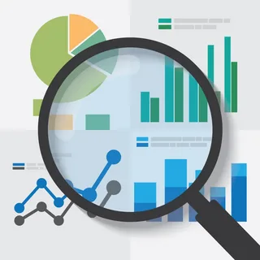
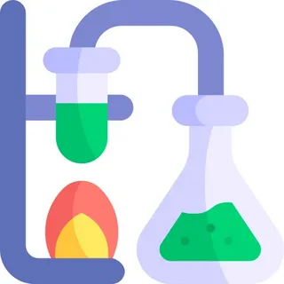
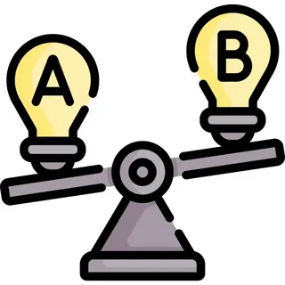

Навыки
- Работа с данными и поиск закономерностей
- Проведение вычислительных экспериментов
- Программирование на Python и C++
- Представление результатов исследования
№15
Проекты и исследования
-
Исследование влияния алгоритмов рекомендаций
на выбор пользователей.
-
Сравнение эффективности последовательных
и параллельных вычислений.
-
Анализ применения машинного обучения
для прогнозирования сложных процессов.
-
Исследование поведения игровых агентов
в виртуальной среде.
Гипотезы исследования
Алгоритмы рекомендаций
Персональные рекомендации влияют на выбор пользователя.
Статус: проверяется
Параллельные вычисления
Параллельная обработка сокращает время расчёта.
Статус: проверяется
Прогнозирование
Модель машинного обучения может точнее предсказывать результат.
Статус: запланирована
Методы исследования

Анализ данных
Поиск закономерностей в собранных данных.
Подробнее
Сравниваю показатели и отмечаю повторяющиеся зависимости.

Эксперимент
Проверка гипотезы на нескольких наборах данных.
Подробнее
Меняю одно условие и сравниваю полученные результаты.

Сравнение
Сопоставление работы двух способов решения.
Подробнее
Оцениваю время выполнения и точность каждого способа.
Результаты эксперимента
Измерения ещё не получены.
Обратная связь